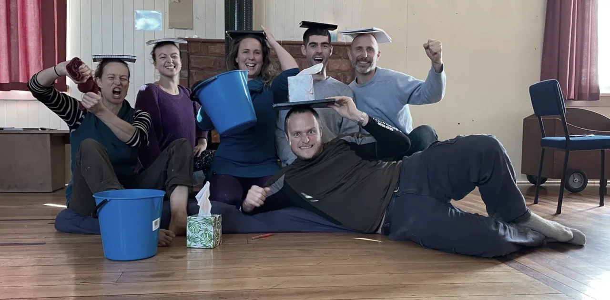
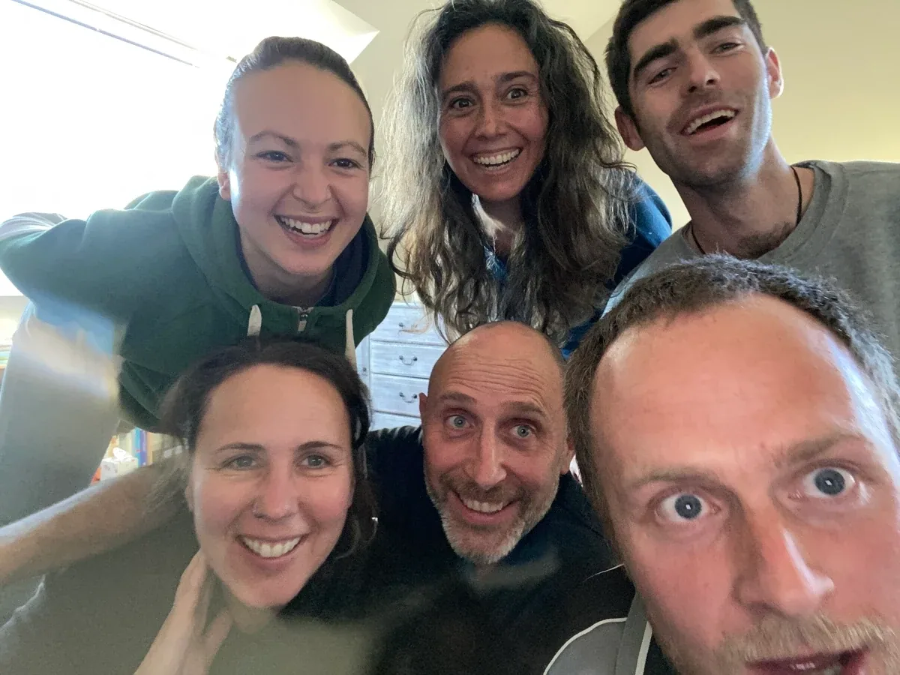

Healingteam on Strikingly
-
THE HEALING TEAM
Welcome to possibilities.
-
THE LEGEND
The Healing Team started with the necessity of their own healing; healing of old emotions which when are stuck in the body and activated, limit the possibilities in the Now. All of the team members are dedicated Edge-workers and were already on the path of creating Next Culture before the experiment started. Tristan brought the idea to life of creating a space where a team commits to come together in mutual collaboration to go through the necessary Emotional Healing Processes that come up in life. He asked Ana to provide the team with the skills needed to hold extraordinary spaces of healing and evolution. For three months they met weekly, practising the art of space holding, navigating the waves of emotions and collecting the jewels of each process. With time the connection between the team members got stronger and deeper, and they enjoyed the benefits of this healing so much that they decided to offer the possibility to the wider community. Thank you for your courage, love and commitment for growth Annika, Tristan, Sybille, Jay, Hannah and Elliot!
Since this first wave, Ana has been holding online trainings for new people to learn the art of holding space for healing processes. Get in touch if you're interested to join the team!
-
[

](https://custom-images.strikinglycdn.com/res/hrscywv4p/image/upload/c_limit,fl_lossy,h_9000,w_1920,f_auto,q_auto/2219636/937521_614795.png)
-
The Team
ANA NORAMBUENA
Possibility Trainer and Coach. She brings clarity, love and transformation in her work and is passionate about the art of relating. She holds Expand The Box Trainings and Possibility Labs in New Zealand.
ELLIOT CLELAND
Earthworker, Community Weaver, regenerative culture explorer and bridge builder.
SYBILLE BIEDERT
Edgeworker and movement lover. She weaves OpenFloor movement practice & Possibility Management to create transformational embodied medicine to grow physically, emotionally, energetically & mindfully.
TRISTAN GIRDWOOD
Possibility Trainer and Coach. Tristan takes a stand for bringing presence, oneness, love and courage to the emerging Next Culture. He holds Expand The Box Training and Men's Gatherings.
ANNIKA KORSTEN
Living an abundant hunter-gatherer lifestyle she bridges modern culture with outdoor living skills by running workshops and trainings. She is dedicated to her own and her coaching clients growth and transformation.
HANNAH FATIMA
Hannah is an Edgeworker, passionate about holistic health. Her focus at this time involves healing her emotions and bringing this practice to others so that people may find sustainability in their inner landscape.
JAY HORTON
is, Creation, Connection, Clarity, Initiation. He connects clear spaces with love. A focused father, conscious community builder and dedicated lover of creativity including filmmaking, graphic design and event facilitation.
-
RENEE ALLEYNE
Renee is a bridge between old and new culture. With her love of humanity and warm presence she offers transformative healing processes. She is a youthful grandmother with an insatiable appetite for growth and personal development.
DAMIËT LOOR
Damiët is and Earth Guardian, Visionary Artist, Bridge Worker and Healer. She offers emotional healing processes and 'art of allowing' explorations.
AURORA GYORFFY
Aurora stands for evolution, courage, authenticity, love and playfulness. She is passionate about cultivating regenerative cultures from our Beings to our relationship with all of life. Aurora is based in Eastern Australia.
-
What We Do
We offer emotional healing processes. They are between 30min and 2 hours long. You choose one of us via contact button and you will get more information about time availability and costs.
-
Contact
Do you have questions or comments?
